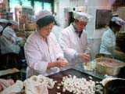
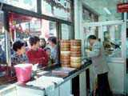
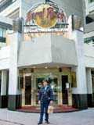
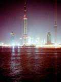
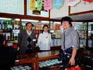
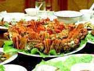

Shanghai(1997/10/31-11/3)

豫園にある美味しいと評判の『南翔饅頭店』。おばさんが小さくもぎり、おじさんがお肉をくるんでショーロンポーにする。

休日だったことも手伝って、えらい行列。２時間半くらい待ちました。それでも人民は文句１つも言わず、並んでいます。一人が並んで、そのあいだに他の人が別の店で色々買ってきたりして楽しんでいる様子でした。お味の方は、確かに美味しかった。

行って来ましたHard
Rock Cafe Shanghai。いつのまにか上海にもできていました。特に美味しいわけでもないので、レストランには最近興味が無く、ピンバッチのみ買ってきました。裸のピンバッチをぼろぼろっと袋に入れるだけで、傷とか気にしていない様子でした
(^^;;

東方明珠広播電視台のテレビ塔。まるでSFセットのようなデザインです。

